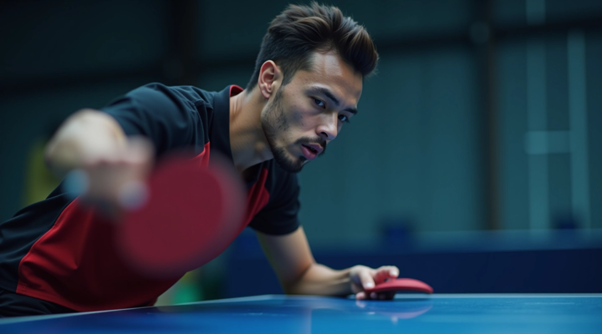
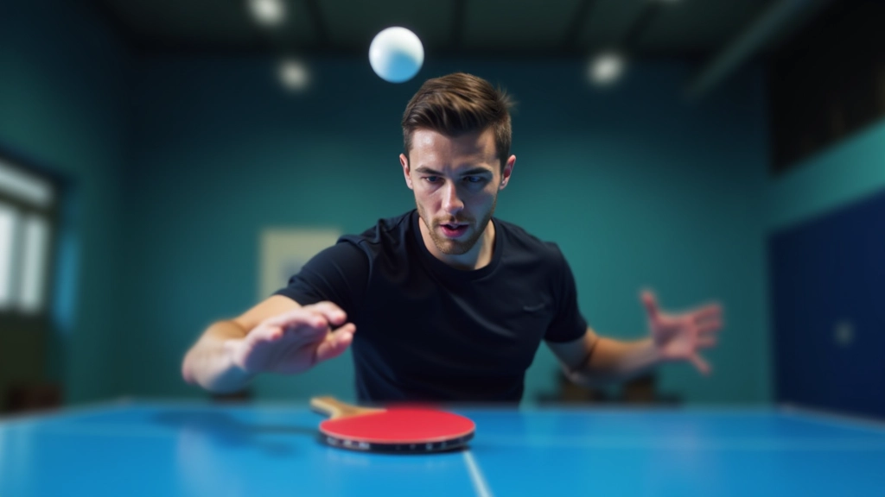
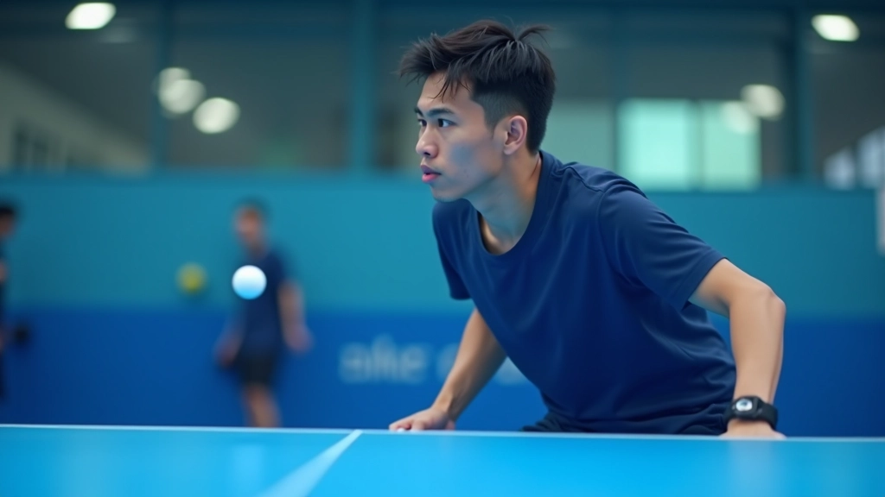
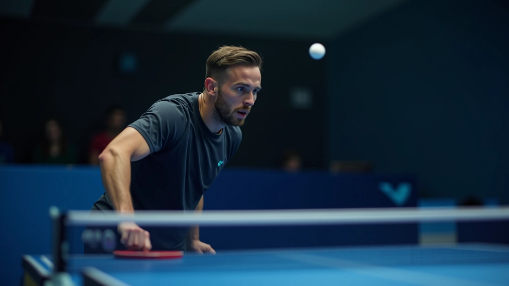
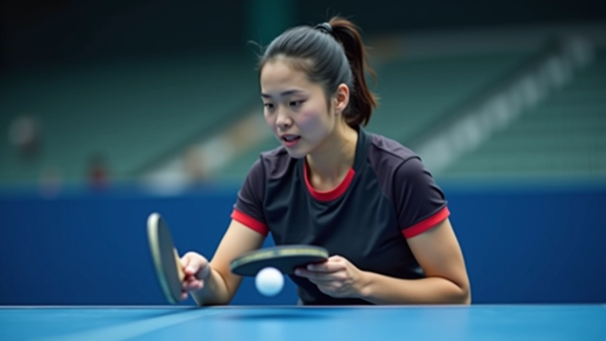
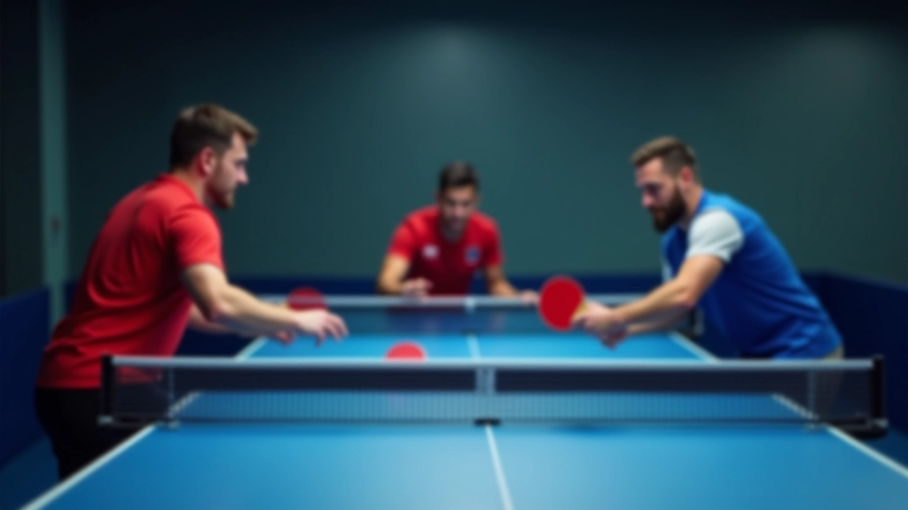
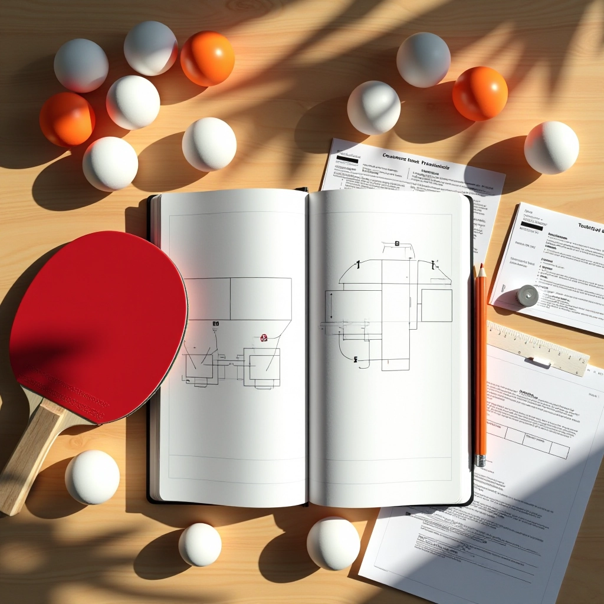
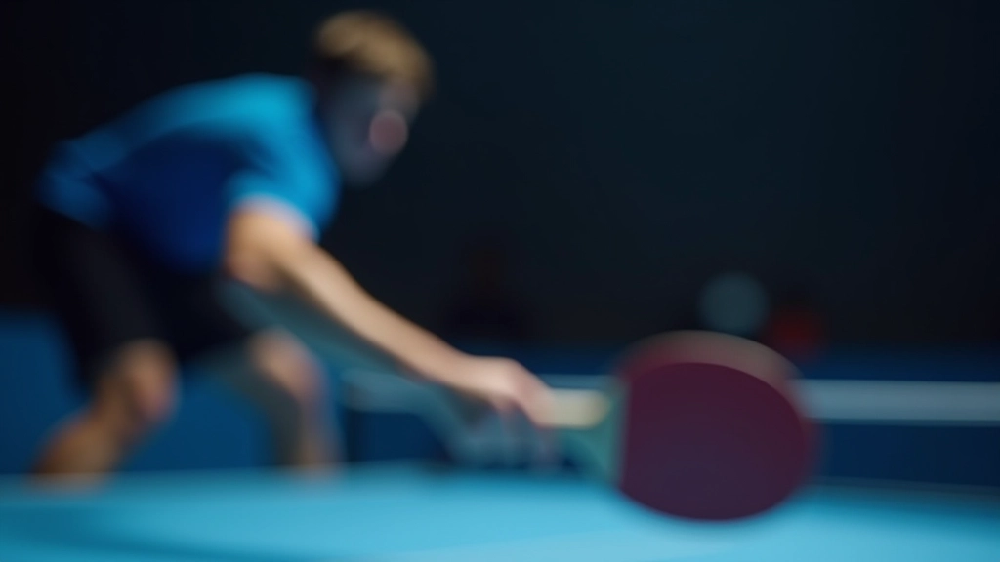
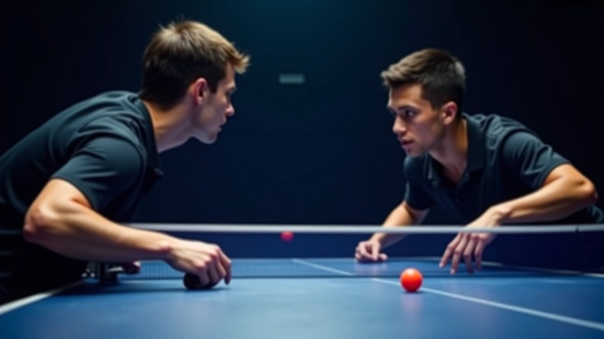

أساسيات الهجوم المضاد: البداية الصحيحة
شرح مفصل لأساسيات الهجوم المضاد وكيفية تطبيقها من البداية. تعلم الوضعية الصحيحة والحركات الأساسية التي ستغير لعبتك.
تقنيات متقدمة للهجوم المضاد على أنواع مختلفة من الكرات. اتعلم كيفية التكيف بسرعة مع أي ظرف وتحويل الدفاع إلى هجوم فعال.

في لعبة تنس الطاولة، الكرة لا تأتي أبداً بنفس الارتفاع. تارة تكون عالية جداً، وتارة أخرى منخفضة جداً. هذا الاختلاف يغير كل شيء — زاوية الضربة، قوة الدفع، توقيت الرد. لو كنت تنتظر أن تتعلم ضربة واحدة تناسب جميع الحالات، فأنت مخطئ.
اللاعبون المحترفون يتكيفون بسرعة البرق. يرون الكرة في الهواء ويقررون في أقل من 300 ميلي ثانية كيف سيضربونها. هنا الفرق بين لاعب متوسط ولاعب جيد حقاً. نحن هنا لنعلمك كيف تفكر وتتحرك مثل هؤلاء المحترفين.

عندما تكون الكرة عالية — فوق مستوى رأسك مباشرة أو أعلى قليلاً — هذه لحظتك. معظم اللاعبين المبتدئين يتخوفون من الكرات العالية. لكن الحقيقة؟ هي أسهل كرة لتهاجم عليها.
السبب بسيط: أنت تتحكم بالزاوية بسهولة أكبر. الكرة ساقطة بالفعل، فأنت فقط توجهها إلى حيث تريد. لا تحتاج قوة ضخمة — اعتماد صحيح وتوقيت سليم يكفيان. الضربة تسمى "الضربة الساحقة" أو Smash، وهي تنهي الكثير من التبادلات في ضربة واحدة.
النقطة الأساسية: عندما تكون الكرة عالية، اصعد خطوة للخلف قليلاً، رفع المضرب فوق رأسك، واضرب بقوة متوازنة. لا تفقد التركيز — الكثيرون يفشلون لأنهم يستعجلون.

هذا المحتوى مقدم لأغراض تعليمية وإعلامية. التقنيات الموصوفة هنا تتطلب ممارسة منتظمة تحت إشراف مدرب متخصص. كل لاعب له احتياجاته الخاصة، والتقدم يختلف من شخص لآخر. إذا كنت مبتدئاً، نوصي بالتدرج التدريجي وعدم الاستعجال.

الآن الجزء الصعب. الكرات المنخفضة — خاصة عندما تكون قريبة من الشبكة — هي ما يفرق بين اللاعبين الجيدين والرائعين. لا يمكنك مهاجمتها بنفس الطريقة. تحتاج استراتيجية مختلفة تماماً.
عندما تكون الكرة منخفضة جداً (أقل من مستوى الخصر)، انسَ فكرة الضربة الساحقة. بدلاً من ذلك، استخدم ما يسميه المحترفون "الضربة الخادعة" أو Flick. هذه ضربة قصيرة سريعة تتخطى الشبكة بقليل وتهبط بالقرب من الخط الخلفي للخصم. يحتاج توقيت دقيق وتركيز عالي، لكنها تعطيك فرصة حقيقية لبدء الهجوم.
لكل ارتفاع كرة تقنية محددة. تعلمها بالترتيب ولا تنتقل للتالية إلا عندما تشعر بالثقة.
استخدمها عندما تكون الكرة فوق مستوى رأسك. اصعد خطوة للخلف، ارفع المضرب عالياً، ثم اضرب بقوة متحكم بها. الهدف هو إنهاء التبادل مباشرة.
للكرات المتوسطة الارتفاع. ضربة دوارة قوية تعطيك سيطرة أفضل. تستخدم عندما لا تستطيع مهاجمة مباشرة لكن تريد أخذ زمام المبادرة.
للكرات القريبة من الشبكة والمنخفضة جداً. حركة قصيرة سريعة تتطلب دقة عالية. تحتاج الكثير من التدريب لكنها تعطيك مزايا كبيرة.
الممارسة لا تجعلك مثالياً — الممارسة الذكية تفعل. هنا برنامج تدريب يمكنك تطبيقه مباشرة في الجلسة القادمة.
ركز على الكرات العالية فقط. اطلب من شريكك أن يرسل كرات عالية متكررة. لا تفكر في الهجوم بعد — فقط تعلم كيف تضع جسمك في الموضع الصحيح.
أضف ضربات متوسطة. تبادل بين كرات عالية ومتوسطة. لاحظ الفرق في الحركة والتوقيت. لا تتعجل الانتقال للكرات المنخفضة بعد.
أضف الكرات المنخفضة تدريجياً. ابدأ بكرات منخفضة لكن بعيدة عن الشبكة. ثم قلل المسافة تدريجياً. كن صبوراً — هذه أصعب مرحلة.

إتقان الكرات العالية والمنخفضة ليس عن تعلم ضربات جديدة فقط. إنه عن تطوير قدرتك على التكيف السريع. في المباراة الحقيقية، لن تعرف ما هي الكرة القادمة. قد تكون عالية، قد تكون منخفضة، قد تكون بسرعة مختلفة. اللاعبون الرائعون يرون الكرة ويقررون في ميلي ثانية.
ابدأ ببطء. تدرب على كل تقنية حتى تشعر بالثقة. لا تقارن نفسك باللاعبين المحترفين — هم درسوا هذا لسنوات. أنت الآن في الطريق الصحيح. استمر، وستفاجئ نفسك بسرعة التحسن.
هل تريد تعمق أكثر في تقنيات الهجوم المضاد؟
اكتشف جميع المقالات والدروس
فريق التحرير والمراجعة
يكتبها فريق أكاديمية تنس الطاولة التحريري، متخصص في شرح تقنيات الهجوم المضاد بطريقة عملية وسهلة الفهم. نركز على التطبيق العملي والممارسة المنتظمة.
طور مهاراتك خطوة بخطوة مع دروسنا المتخصصة

شرح مفصل لأساسيات الهجوم المضاد وكيفية تطبيقها من البداية. تعلم الوضعية الصحيحة والحركات الأساسية التي ستغير لعبتك.

اكتشف كيف يحسن اللاعبون المحترفون توقيتهم وحركتهم. ثلاث مبادئ أساسية تغير طريقة تفاعلك مع أي كرة قادمة.

كيفية تطبيق تقنيات الهجوم المضاد تحت الضغط. استراتيجيات للفوز بالنقاط الحرجة والسيطرة على إيقاع المباراة.